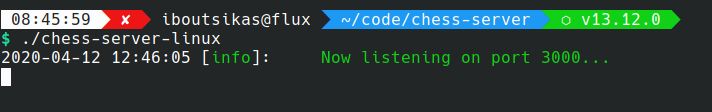
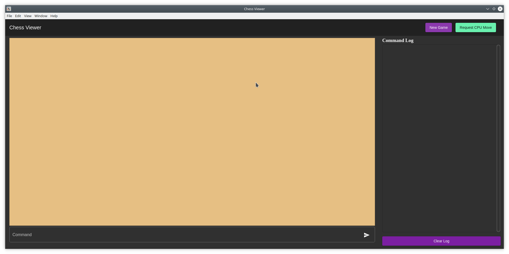

Chess Viewer
A tool to help you interact with your chess driver and visualise the state of your driver.
- Version 1.0.0 - Initial Release
Set Up
The viewer is made up of two components. A server and a client. This allows you to use the client outside your VM with your native OS and screen resolution.
The first thing you need to do is download the executables. You will need:
- The server: /downloads/chess-server
- Windows x64: /downloads/chess-viewer-1.0.0.exe
- Linux x64: /downloads/chess-viewer-1.0.0.AppImage
- MacOS : /downloads/test.txt
Copy/move/download the server zip file in your VM. You can extract it wherever you want, for example
~/chess-server.
You can run it as a normal executable from your terminal:
cd ~/chess-server
./chess-server
sudo chmod +x ./chess-server.
It should look something like the following (with some names changed obviously):
The next step is to forward port 3000 between the host and the VM.
- From VirtualBox Manager open the settings for your VM
- Go to Network
- Click the advanced drop-down thing
- Click Port Forwarding
- Click the green button top right to add a new rule
- Fill in the Name with whatever you want, Host Port and Guest Port with 3000
Usage
Server
You do not need to do anything else with the server. It will provide you with messages that might help you debug your module though. So keep an eye on it. Newlines in your input/output are preserved!
Client
As we've said, you can use the client straight from your Host OS assuming you downloaded the correct version, and it should look something like this:
Most of the buttons should be self explanatory.
- New Game: Sends the 00 B/W command. The color selected is at random. If you want to specify the color send the command yourselves
- Request CPU Move: Will send the 03 command to the module
- Clear log: Will clear the sent/received commands from the viewer. Does not affect the module in any way.
You can type commands in the input field, hit enter or the send button to send them. The viewer will send the
command as you typed it with a '\n'
at the end. The response you get back is exactly what your module returned from read(). The viewer does no
validation
and does not perform any logic whatsoever. Also make sure to check the server executable from debug information!
Chess pieces
The chess pieces are layed out from top left to bottom right. So top left is A1 and bottom right is H8. You can always hover over a square to see its position! You can see an example of the board layout below.

FAQ
Q: Nothing happens when I send commands
A: Make sure the server is running inside your VM. You should also check the server for any debug output.
TL;DR
- Download the server: /downloads/chess-server
-
Download one of the clients
- Windows x64: /downloads/chess-viewer-1.0.0.exe
- Linux x64: /downloads/chess-viewer-1.0.0.AppImage
- Forward port 3000 on the host to 3000 on the VM
- ????
- Profit